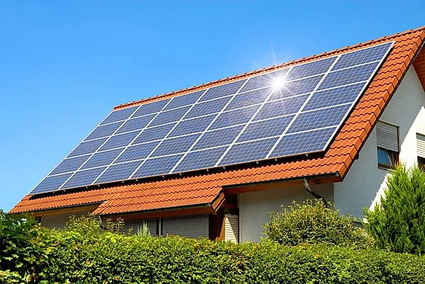

Tipos de Energia Sustentáveis
Energia Solar
A energia solar é uma energia renovável, que tem como objetivo capturar a energia transmitida pelos raios solares e armazenar através de equipamentos tecnológicos. O conceito que conhecemos a respeito de energia solar está associado a energia fotovoltaica.
O sol emite raios solares que são capturados através de painéis solares, onde faz a transformação da luz solar em corrente elétrica para que possa ser utilizada em nossas casas ou indústrias, esse é o conceito básico de como funciona uma energia solar fotovoltaica. Existem tanto pontos positivos como negativos para o uso dessa energia alternativa, porém a vantagem que ela trás que nenhum ponto negativo consegue superar é que ela é uma energia limpa, ou seja, não trás nenhum problema para o meio ambiente e além disso, a energia solar é considerada uma energia inesgotável, sendo a energia com maior potencial.
Vantagens
- Renovável;
- Você precisará gastar com a placa e a instalação, depois disso você terá uma fonte de energia renovável e só precisará fazer a manutenção quando necessário;
- Não emite poluentes;
- O tempo é muito longo para que haja uma manutenção das placas, pois elas têm uma durabilidade bem elevada;
Desvantagens
- Para comprar e instalar uma placa fotovoltaica o preço é muito alto, pois ela traz um certo nível de complexidade;
- Não se consegue armazenar uma grande quantidade de energia solar;
- Para fazer uma placa solar exige uma grande quantidade de extração de zinco e uma expansão dessa energia ia resultar em uma demanda ainda maior de zinco para a fabricação das placas solares;